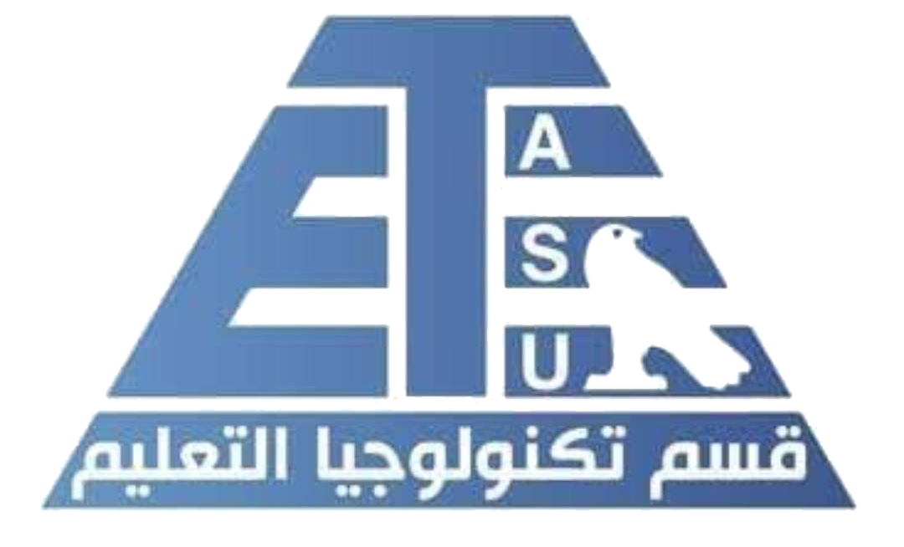

قسم تكنولوجيا التعليم

,يهدف إلى إعداد كوادر متخصصة في تصميم وإنتاج واستخدام الوسائل التكنولوجية التعليمية
,يُركز القسم على تطوير مهارات الطلاب في دمج التكنولوجيا بالتعليم
.من خلال برامج دراسية تجمع بين الجانب النظري والتطبيقي
.مما يسهم في تحسين جودة العملية التعليمية ودعم الابتكار التربوي